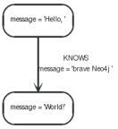

4.2. 你好，世界¶
正这里可以学习如何创建和访问节点和关系。关于建立工程环境的信息，请参考：第 4.1 节 将Neo4j引入到你的项目工程中。
从:ref:`第 2.1 节 什么是图数据库 <chapter2_1_index>`中，我们还记得，一个Neo4j图数据库由以下几部分组成：
- 相互关联的节点
- 有一定的关系存在
- 在节点和关系上面有一些属性。
所有的关系都有一个类型。比如，如果一个图数据库实例表示一个社网络，那么一个关系类型可能叫 KNOWS 。
如果一个类型叫 KNOWS 的关系连接了两个节点，那么这可能表示这两个人呼吸认识。一个图数据库中大量的语义都被编码成关系的类型来使用。虽然关系是直接相连的，但他们也可以不用考虑他们遍历的方向而互相遍历对方。
提示
范例源代码下载地址：EmbeddedNeo4j.java
4.2.1. 准备图数据库¶
关系类型可以通过 enum 创建。正这个范例中我们之需要一个单独的关系类型。下面是我们的定义：
我们也准备一些需要用到的参数：
下一步将启动数据库服务器了。逐一如果给定的保持数据库的目录如果不存在，那么它会自动创建。
注意：启动一个图数据库是一个非常重（耗费资源）的操作，所以不要每次你需要与数据库进行交互操作时都去启动一个新的实例。这个实例可以被多个线程共享。事务是线程安全的。 就像你上面所看到的一样，我们注册了一个关闭数据库的钩子用来确保在JVM退出时数据库已经被关闭。现在是时候与数据库进行交互了。
4.2.2. 在一个事务中完成多次写数据库操作¶
所有的写操作（创建，删除以及更新）都是在一个事务中完成的。这是一个有意的设计，因为我们相信事务是使用一个企业级数据库中非常重要的一部分。现在，在Neo4j中的事务处理是非常容易的：
要了解更多关于事务的细节，请参考：transactions 和 Java API中的事务接口。
4.2.3. 创建一个小型图数据库¶
现在，让我们来创建一些节点。 API是非常直观的。你也随意查看在 http://components.neo4j.org/neo4j/1.8/apidocs/ 的JavaDocs文档。它们也被包括正发行版中。这儿展示了如何创建一个小型图数据库，数据库中包括两个节点并用一个关系相连，节点和关系还包括一些属性：
现在我们有一个图数据库看起来像下面这样：
图 4.1. Hello World 图数据库

4.2.4. 打印结果¶
在我们创建我们的图数据库后，让我们从中读取数据并打印结果。
输出结果：
4.2.5. 移除数据¶
在这种情况下我们将在提交之前移除数据：
注意删除一个仍然有关系的节点，当事务提交是会失败。这是为了确保关系始终有一个开始节点和结束节点。
4.2.6. 关闭图数据库¶
最后，当应用完成后 关闭数据库：